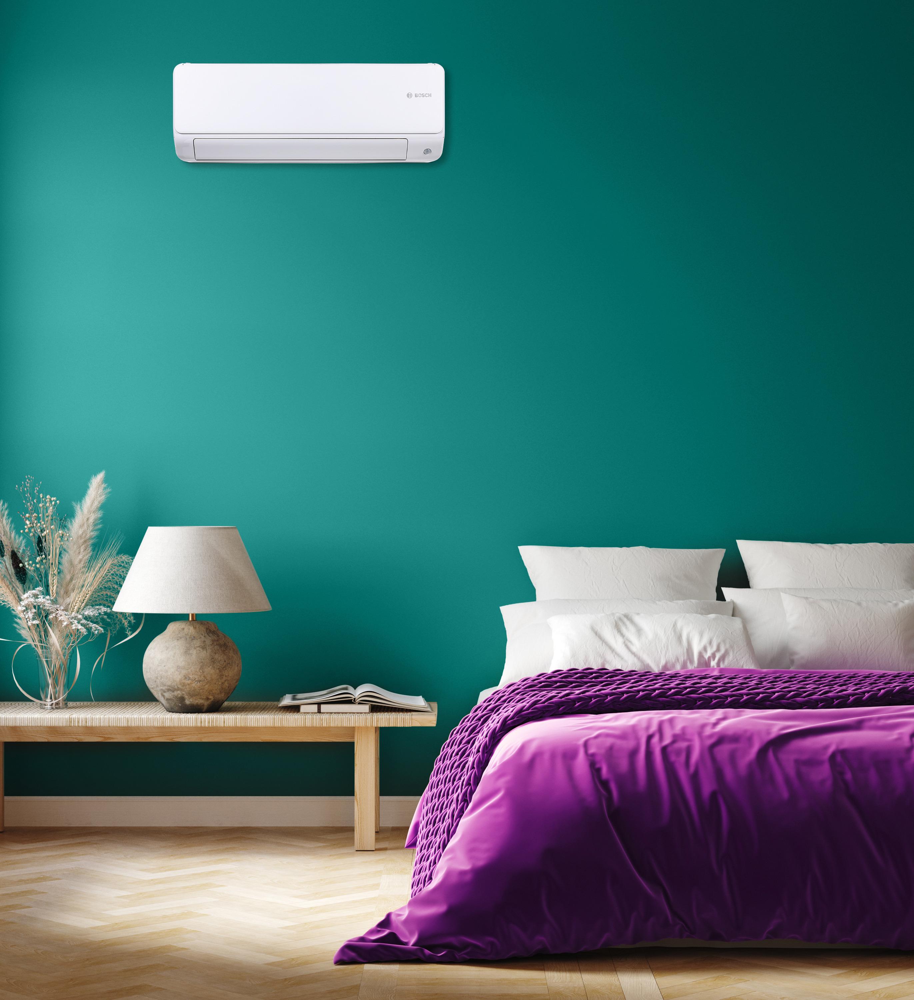

Comfort het hele jaar door met een airco
Een airco is veel meer dan enkel verkoeling in de zomer. Moderne airconditioningsystemen bieden ook verwarming tijdens koudere maanden. Zo geniet u elk seizoen van een aangenaam binnenklimaat.
JS Klimaattechnieken adviseert u bij het kiezen van het juiste toestel op basis van uw woning, verbruik en wensen. Wij zorgen voor een professionele plaatsing, onderhoud en service na installatie.
Wilt u investeren in comfort, energiezuinigheid en toekomstgerichte technologie? Neem contact met ons op voor een vrijblijvende offerte.